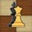

| - | |||||||||
|---|---|---|---|---|---|---|---|---|---|
|  | Pagina Principala | Despre Sah | Istoria Sahului | Ghiduri | Competitii Esports | Shop | Despre Mine | Logare | Inregistrare |
Chess For Us
Website-ul cu si despre sah, pentru incepatori, amatori, profesionisti! Pentru tine!
Aceasta pagina este dedicata tuturor persoanelor interesate si dornice de sah, un joc de strategie între doi jucători. Nu conteaza daca esti incepator, amator sau profesionist, oricine este primit si acceptat in comunitatea noastra. Toti avem aceleasi interese: sa ne jucam, sa invatam lucruri noi, sa ne facem prieteni, sa socializam si sa ne distram!
Uite ce informatii poti afla de pe site-ul nostru:
- Despre Sah
- Istoria jocului
- Ghiduri
- Competitii esports
- Shop
Daca esti incepatori si iti doresti sa inveti sa joci acest joc minunat, aceasta pagina este pentru tine. Contine fiecare detaliu despre cum poti juca sah, regulile acestuia, mici detalii mai putin cunoscute si multe altele.
Daca esti interesat de istoria acestui joc, cand a fost inventat, cum se jucau oamenii in acea perioada si multe altele, aceasta pagina este perfecta pentru cei ce vor sa cunoasca istoria minunata si influentele acesteia in viata noastra de zi cu zi.
Daca iti doresti sa iti perfectionezi stilul de joc, mutarile de inceput, tacticile si strategiile, aceasta pagina contine ghiduri despre cum poti deveni un jucator mai bun.
Daca iti doresti un challenge, esti un jucator profesionist si iti doresti sa te concurezi cu alte persoane de nivelul tau, poti aplica la una dintre turneele noastre viitoare unde iti vei pune cunostiintele la incercare, facandu-ti prieteni noi, dusmani pe moment si distrandu-te intr-o atmosfera captivanta.
Daca esti un colectionar si iti doresti o cutie de sah din cea mai buna calitate, suveniruri si produse semnate de campionii sahului, aceasta pagina iti va fi cel mai bun prieten.